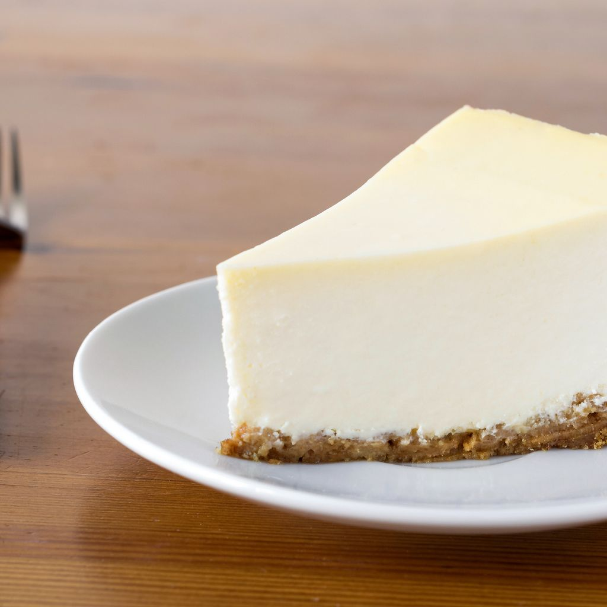

as
Cheesecake
Most Boring Cheesecake

Yeah, it's just a boring cheesecake
I won't lie to you, it's just a flat flavorless cheesecake.
Things you'll probably need
- 1 cup graham cracker crumbs
- 1 cup white sugar
- 1 half of a cup butter, melted
- 5 (8 ounce) packages cream cheese, softened
- 5 eggs
- 2 egg yolks
- 1 cup white sugar
I completely messed up the ingredient list...whatever, I don't care.
Directions that don't really matter because you're still going to mess it up
- Uno
Preheat oven to 400 degrees F (200 degrees C) or don't I don't care.
- Deux
Mix around half of the ingredients.
- Three
Mix the other half and just wing it.
- 4
Just put it in the oven until it looks like you can eat it without getting sick.